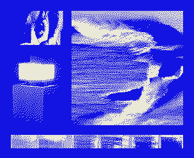

oscar dujarrier

- NOM :
- Oscar Dujarrier
- PRATIQUE :
- installation, vidéo, sculpture, dispositifs numériques
- COLLECTIF :
- Atelier Babo, membre fondateur
- EXPOSÉ :
- Le bruit de l'eau, « 5D », Frac Normandie, 2026–2027
Entre installation vidéo, sculpture et dispositifs numériques, cette pratique déploie des formes hybrides où les médiums se répondent et se contaminent. Elle interroge la matérialité de l'image numérique et la saturation qui structure notre expérience des images.
Survolez un dossier pour le sortir du tiroir, cliquez pour l'ouvrir.Touchez un dossier pour le sortir du tiroir, touchez-le encore pour l'ouvrir.
- 100TRAVAUX
- 110MATÉRIALITÉ DE L'IMAGE
-
111Dé-construction
Dé-construction
2024
Installation vidéo
-
112Le bruit de l'eau
Le bruit de l'eau
2026
Dispositif cathodique, lecteur DVD
-
113Rémanence
Rémanence
2025–2026
Tissus lestés, vidéoprojecteurs, son
-
114Transmutation
Transmutation
2024
Vidéo générative par codage
- 120SATURATION
-
121175 Zettaoctets
175 Zettaoctets
2023
Installation vidéo et sonore
-
122Livre blanc
Livre blanc
2023
Installation d'éditions, A4
-
123Vivre à travers le flux
Vivre à travers le flux
2025–2026
Vidéo, 1h07
- 200RECHERCHEà venir
- 300PORTFOLIOà venir
- 400CVà venir
Généalogie des projets
AU SEIN DU COLLECTIF — BABO
BABO, mot coréen signifiant « idiot », désigne une façon d'être à côté des cadres habituels. Le collectif s'est formé en 2023 à l'ésadhar, puis constitué en association en 2025.
L'essentiel de cette pratique se construit aujourd'hui à travers Babo : des projets menés à plusieurs, où la vidéo, la sculpture, l'installation et l'art numérique se répondent selon la même exigence que le travail personnel présenté ici.
Voir Babosphere, Signal faible, Trois dimensions et Portrait immatériel sur la page du Collectif.